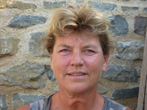

Haptotherapie
Haptotherapie is een begeleidingsvorm, waar de betekenis en de kracht van het gevoel centraal staan. Gevoelens spelen een belangrijke rol in de waardering voor wat je ziet, hoort, proeft, ruikt en aanraakt. Je gevoel heeft invloed op je gedachten, je gedrag en je contact met anderen. Andersom hebben je gedachten en je gedrag ook invloed op je gevoel. Haptotherapie maakt je bewust van deze wisselwerking. Door je bewust te worden van je gevoelens en de signalen van je lijf te leren begrijpen en serieus te nemen, kun je voor een betere afstemming zorgen tussen voelen, denken en doen. Je bent daardoor meer in balans en in staat keuzes te maken die bij je passen en goed voor je zijn.
Haptotherapie is gebaseerd op de haptonomie.
Haptonomie beschrijft wat je met je gevoel kunt doen in contact met
jezelf en in contact met je omgeving. En hoe dat voelbaar en zichtbaar is
in je lichaam.
Voor wie?
Haptotherapie helpt:
- als je moeite hebt met voelen of gevoelens toe laten
- als je moeite hebt met het herkennen en uiten van gevoelens
- als je moeite hebt met het voelen en stellen van je grenzen
- als je lichamelijke klachten hebt met een mogelijk psychosomatische achtergrond, zoals hyperventilatie en spanningshoofdpijn
- als je last hebt van een negatief zelfbeeld/lichaamsbeeld
- als je last hebt van lichamelijke en/of geestelijke overbelasting
- als je moeite hebt met intimiteit en nabijheid
- als je moeite hebt met keuzes maken
- als je communicatieproblemen hebt met andere mensen
- als je dreigt vast te lopen in verwerking en herstel na ziekte of verlies
- als angst teveel je doen en laten bepaalt
- als praten niet genoeg is (als aanvulling op gesprekstherapie).
Werkwijze
De eerste afspraak is een kennismaking. Jij vertelt waar je tegen aan loopt, we verhelderen -indien nodig- samen je hulpvraag en bekijken wat haptotherapie jou kan bieden. Aan het eind van het gesprek concluderen we of het klikt tussen ons en of je verder wilt.
Bij de haptotherapie werken we naast het gesprek met directe aanraking, waarbij bewustwording van je lichamelijke en gevoelsmatige/ emotionele reacties centraal staat. Hierin onderscheidt de haptotherapie zich van psychotherapie. Ook gebruiken we ervaringsgerichte oefeningen, die je bewust maken van je reactiepatronen in contact met jezelf en anderen.
Coaching
Coaching stimuleert ontwikkeling. Ik help je om op een open manier naar jezelf te kijken. Je krijgt duidelijk zicht op waar je tegen aan loopt en hoe het beter kan. Je leert je kwaliteiten beter kennen en inzetten. Dit vergroot je vitaliteit. Je gaat je eigen potentieel meer benutten.
Voor wie?
Coaching helpt:
- als je ondersteuning wilt in je persoonlijke ontwikkeling
- als je ingesleten gedragspatronen wilt doorbreken
- als je het gevoel hebt in een burn-out situatie te belanden
- als je je werk een andere wending wilt geven, maar niet weet hoe
- als je na langdurige afwezigheid terug wilt keren op je werk en daarbij begeleid wilt worden
Werkwijze
Mijn wijze van coaching is sterk beïnvloed door de haptonomie. Het coachingstraject verloopt via vraagstelling, spiegeling en ervaringsgerichte oefeningen. Ik richt me op bewustwording, zelfsturing en in beweging komen. Om speler in plaats van speelbal te zijn.
Voor het coachingstraject spreken we een beperkt aantal sessies af (5 tot 7). Is je vraag werk-gerelateerd, vraag dan aan je werkgever naar de (financiële) mogelijkheden.
Kosten
Een sessie duurt 60 minuten. De kosten zijn 85 euro, inclusief 21% BTW. De meeste zorgverzekeraars betalen een (gedeeltelijke) vergoeding, wanneer je aanvullend verzekerd bent. Zie hiervoor de polisvoorwaarden van je zorgverzekeraar of de vergoedingenlijst van de VVH.
Voor haptotherapie is geen verwijzing noodzakelijk.
Afspraken die minimaal 24 uur van te voren zijn afgezegd worden niet in rekening gebracht.
Deskundigheid
Ik ben erkend en geregistreerd bij de beroepsvereniging Vereniging van Haptotherapeuten (VVH) en opgenomen in het kwaliteitsregister van GZ-Haptotherapeuten.
Ik heb goede contacten met verwijzers en andere hulpverleners.
Mijn deskundigheid houd ik op peil door middel van nascholingen, supervisie en intervisie.
Trui Verwer
VVH registratie nr: 133
KvK-nummer: 34339910
AGB-code zorgverlener: 90026047
AGB-code praktijk: 90(0)04880
|
Vertrouwelijkheid
Vanzelfsprekend blijft alles wat er ter sprake komt tijdens de sessies binnenskamers. Wanneer ik met je huisarts of verwijzer wil overleggen vraag ik altijd vooraf je toestemming.
Als je niet tevreden bent over de behandeling kun je dat altijd met me bespreken. Klachtrecht is geregeld bij de Commissie van Toezicht van de
Vereniging van Haptotherapeuten.
Trui Verwer

Trui Verwer (1957)
In mijn werk als fysiotherapeut kwam ik in aanraking met haptonomie. Ik raakte er zo door geboeid, dat ik eind jaren '80 de opleiding tot haptotherapeut heb gevolgd. Sindsdien heb ik in mijn praktijk al veel mensen mogen en kunnen helpen. Daarnaast werk ik als trainer/coach bij het LTC, instituut voor persoonlijke ontwikkeling en gezondheidsmanagement, te Zwolle. Ik ben als gastdocent verbonden aan de Academie voor Haptonomie te Doorn.
Mijn drijfveer is mensen te ondersteunen in hun proces om steeds meer van zichzelf te worden. Eigenheid, persoonlijk leiderschap en zelfsturing zijn voor mij belangrijke kernwaarden.